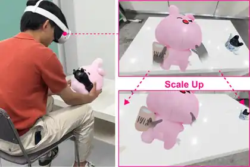
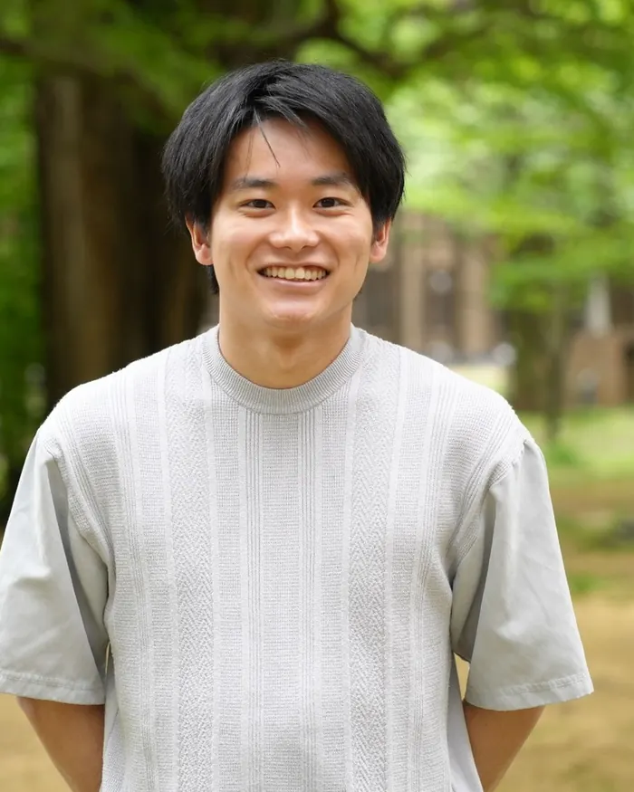

Stretched Reality
A visuo-haptic interaction system that supports consistent physical interaction with independently transformed virtual objects and environments.
Image source: official IVRC 2026 exhibition page.

About
Undergraduate researcher in the Department of Precision Engineering at The University of Tokyo.
Affiliation
The University of Tokyo
Department of Precision Engineering
Koyama Lab
My primary research interest is digital fabrication, especially at the intersection of computation, interaction, and physical making.
I also work on human–computer interaction and XR systems, and I am interested in computer graphics as a future research direction.
01 — Projects
Public-facing work and official project links.

A visuo-haptic interaction system that supports consistent physical interaction with independently transformed virtual objects and environments.
Image source: official IVRC 2026 exhibition page.
02 — Research
Exhibitions, presentations, and linked official session pages.
Accepted to the Emerging Technologies program. Official session page and presenter page are linked below.
If an official paper page becomes available later, it can be added here.